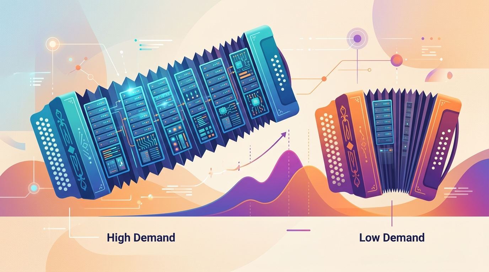

Scaling is easy. Scaling reliably while keeping every response safe is the part they do not mention in the demo.
Deploy AI Agent
Prerequisites
Before starting, make sure you are familiar with production basics as covered in Section 26.1: Application Architecture and Deployment.
Production LLM systems must handle unpredictable traffic while ensuring every response is safe. Scaling involves more than adding replicas; it requires latency optimization at every layer (caching, batching, model quantization), backpressure mechanisms to prevent cascading failures, and guardrails that inspect both inputs and outputs in real time. The prompt injection defenses from Section 10.4 form one essential guardrail layer. Building on the quantization techniques from Section 8.1 and the KV cache optimizations from Section 8.2, this section covers the performance engineering and safety infrastructure needed to run LLM applications at scale.
1. Latency Optimization Strategies
Users do not perceive latency as a single number. They notice two distinct things: how long until the first word appears (time-to-first-token, or TTFT) and how smoothly the rest of the text streams in (inter-token latency, or ITL). A system with fast TTFT but stuttering ITL feels broken, even if the total generation time is identical to a competitor's. Different optimization strategies target each component, as the layered stack in Figure 26.3.1 shows.
Latency optimization works like diagnosing low water pressure in a building. The problem could be at the municipal supply (infrastructure layer), the building's main pipe (model layer), the floor's distribution system (request layer), or a clogged faucet aerator (caching layer). You diagnose from the top down, fix the tightest bottleneck first, and measure again. Adding a bigger pipe at the building level does nothing if the faucet is clogged. Unlike plumbing, however, LLM latency has two distinct "flows" (TTFT and ITL) that require separate diagnosis. Code Fragment 26.3.1 below puts this into practice.
Rate Limiting with Token Buckets
# Define TokenBucket; implement __post_init__, consume
# Key operations: results display, cost tracking
import time
from dataclasses import dataclass, field
@dataclass
class TokenBucket:
"""Token bucket rate limiter for LLM API requests."""
capacity: float # max tokens in bucket
refill_rate: float # tokens added per second
tokens: float = field(init=False)
last_refill: float = field(init=False)
def __post_init__(self):
self.tokens = self.capacity
self.last_refill = time.monotonic()
def consume(self, cost: float = 1.0) -> bool:
now = time.monotonic()
elapsed = now - self.last_refill
self.tokens = min(self.capacity, self.tokens + elapsed * self.refill_rate)
self.last_refill = now
if self.tokens >= cost:
self.tokens -= cost
return True
return False
# Allow 10 requests/sec, burst up to 50
limiter = TokenBucket(capacity=50, refill_rate=10)
for i in range(5):
allowed = limiter.consume()
print(f"Request {i}: {'allowed' if allowed else 'rate-limited'}")Prompt injection attacks, where users trick an LLM into ignoring its system prompt, were discovered almost immediately after ChatGPT launched. The first widely shared attack was simply asking the model to "ignore all previous instructions." Despite years of research, no model is fully immune to sophisticated prompt injection, making defense-in-depth the only reliable strategy.
2. Backpressure and Queue Management
Backpressure is a mechanism where an overloaded system signals upstream callers to slow down or shed load, preventing cascading failures. In LLM serving, GPU inference has hard capacity limits; without backpressure, unbounded request queues can cause out-of-memory errors and extreme latency. Code Fragment 26.3.2 below puts this into practice.
# Define BackpressureQueue; implement __init__, utilization, health_status
# Key operations: health checking
import asyncio
from collections import deque
class BackpressureQueue:
"""Bounded async queue with backpressure signaling."""
def __init__(self, max_size: int = 100, warn_threshold: float = 0.8):
self.queue = asyncio.Queue(maxsize=max_size)
self.max_size = max_size
self.warn_threshold = warn_threshold
self.rejected = 0
@property
def utilization(self) -> float:
return self.queue.qsize() / self.max_size
async def enqueue(self, item, timeout: float = 5.0):
try:
await asyncio.wait_for(
self.queue.put(item), timeout=timeout
)
return {"status": "queued", "position": self.queue.qsize()}
except asyncio.TimeoutError:
self.rejected += 1
return {"status": "rejected", "reason": "queue_full"}
def health_status(self):
util = self.utilization
if util > self.warn_threshold:
return "degraded"
return "healthy"
3. Production Guardrails
| Guardrail System | Type | Checks | Latency |
|---|---|---|---|
| NeMo Guardrails | Programmable rails | Input/output, topic control, fact-checking | 50-200ms |
| Guardrails AI | Validator framework | Schema validation, PII, toxicity, hallucination | 20-100ms |
| Lakera Guard | API service | Prompt injection, PII, toxicity, relevance | 10-50ms |
| Llama Guard 3/4 | Safety classifier | Unsafe content categories (S1-S14) | 100-300ms |
| Prompt Guard | Injection detector | Direct/indirect prompt injection | 5-20ms |
| ShieldGemma | Safety classifier | Dangerous content, harassment, sexual content | 50-150ms |
NeMo Guardrails Configuration
Code Fragment 26.3.3 demonstrates this approach in practice.
# config.yml for NeMo Guardrails
models:
- type: main
engine: openai
model: gpt-4o-mini
rails:
input:
flows:
- self check input # Block harmful prompts
- check jailbreak # Detect jailbreak attempts
output:
flows:
- self check output # Filter harmful outputs
- check hallucination # Verify factual claims
# Colang rails definition
define user ask about competitors
"What do you think about [competitor]?"
"Compare yourself to [competitor]"
define flow
user ask about competitors
bot refuse to discuss competitors
"I'm not able to provide comparisons with other products."Validate LLM output against a schema with built-in validators for PII, toxicity, and format constraints.
# pip install guardrails-ai
from guardrails import Guard
from guardrails.hub import DetectPII, ToxicLanguage
guard = Guard().use_many(
DetectPII(pii_entities=["EMAIL_ADDRESS", "PHONE_NUMBER"], on_fail="fix"),
ToxicLanguage(threshold=0.8, on_fail="noop"),
)
raw_output = "Contact john@example.com or call 555-0123 for details."
result = guard.validate(raw_output)
print(result.validated_output) # PII redacted in output
Llama Guard for Content Safety
# implement check_safety
# Key operations: training loop, results display, safety guardrails
from transformers import AutoModelForCausalLM, AutoTokenizer
import torch
def check_safety(conversation: list[dict], model_name="meta-llama/Llama-Guard-3-8B"):
"""Classify conversation safety using Llama Guard 3."""
tokenizer = AutoTokenizer.from_pretrained(model_name)
model = AutoModelForCausalLM.from_pretrained(
model_name, torch_dtype=torch.bfloat16, device_map="auto"
)
chat = tokenizer.apply_chat_template(conversation, tokenize=False)
inputs = tokenizer(chat, return_tensors="pt").to(model.device)
with torch.no_grad():
output = model.generate(**inputs, max_new_tokens=100, pad_token_id=0)
result = tokenizer.decode(output[0][inputs["input_ids"].shape[1]:])
is_safe = "safe" in result.lower()
return {"safe": is_safe, "raw_output": result.strip()}
# Example usage
convo = [
{"role": "user", "content": "How do I make a simple pasta recipe?"}
]
print(check_safety(convo))Figure 26.3.2 shows the complete guardrail pipeline, with input rails filtering requests before they reach the LLM and output rails validating responses before they reach the user.
Guardrails add latency to every request. Profile your guardrail stack and set a latency budget. Lightweight checks (regex, blocklist, Prompt Guard at 5-20ms) should run first; expensive classifiers (Llama Guard at 100-300ms) should run only when cheaper checks pass. Parallelize independent checks where possible.
Llama Guard 3 classifies content across 14 safety categories (S1 through S14), including violent crimes, self-harm, sexual content, and privacy violations. Llama Guard 4 extends this with multimodal support for image inputs. Both models can be fine-tuned on custom safety taxonomies for domain-specific needs.
The most effective guardrail strategy combines multiple layers: fast, cheap filters for obvious violations, followed by ML classifiers for nuanced content, and finally output validators for factual accuracy. No single guardrail system catches everything, and defense in depth is the only reliable approach.
Knowledge Check
1. What are the two components of LLM latency, and which one is more important for user experience?
Show Answer
2. How does a token bucket rate limiter handle burst traffic?
Show Answer
3. What is the difference between NeMo Guardrails and Llama Guard?
Show Answer
4. Why should input guardrails run before expensive LLM generation?
Show Answer
5. What is backpressure, and why is it important for LLM serving?
Show Answer
Who: An ML engineering team at a digital health company
Situation: The team launched a patient-facing symptom checker powered by GPT-4o, receiving 15,000 queries per day.
Problem: Within the first week, the chatbot provided a response that could be interpreted as a specific diagnosis, violating medical device regulations. The team needed guardrails without sacrificing the sub-2-second response time users expected.
Dilemma: Running Llama Guard on every request added 200ms of latency and required a dedicated GPU. Skipping it risked another harmful output reaching patients.
Decision: They implemented a tiered guardrail pipeline: fast regex checks first (5ms), then Prompt Guard for injection detection (15ms), and Llama Guard only when cheaper checks passed (200ms). Checks ran in parallel where possible.
How: The regex layer caught obvious medical advice patterns ("you should take," "your diagnosis is"). Prompt Guard blocked injection attempts. Llama Guard classified the remaining 70% of requests for safety categories S1 through S14.
Result: Total guardrail latency averaged 85ms (down from 220ms with sequential processing). Zero harmful medical advice incidents occurred in the following six months.
Lesson: Order guardrails from cheapest to most expensive, parallelize independent checks, and accept that safety latency is a non-negotiable cost of production deployment.
Key Takeaways
Before starting this section, you should be comfortable with Optimize LLM latency at four layers: caching, request batching, model quantization, and infrastructure (GPU selection, continuous batching)., Implement rate limiting with token buckets and backpressure with bounded queues to protect GPU resources from overload., Deploy guardrails as a pipeline: fast input filters first, then ML classifiers, then output validators., NeMo Guardrails provides programmable conversation control; Llama Guard and ShieldGemma provide ML-based content safety classification., No single guardrail catches everything; defense in depth with multiple complementary systems is essential for production safety., and Profile guardrail latency and set a budget; parallelize independent checks and order them from cheapest to most expensive..
Guardrails protect individual requests; the next challenge is improving the system over time. Section 26.4 covers the LLMOps practices (prompt versioning, A/B testing, data flywheels) that drive continuous improvement.
Open Questions:
- How should production guardrails balance safety with user experience? Overly aggressive content filtering creates false positives that frustrate legitimate users, while permissive filters risk harmful outputs.
- Can model routing (dynamically selecting the cheapest model that can handle each request) reduce costs without degrading quality? The research on input complexity estimation for routing is still early.
Recent Developments (2024-2025):
- Semantic caching for LLM applications (2024-2025) showed that embedding-based similarity detection can serve cached responses for semantically equivalent queries, reducing costs by 20-40% in some deployments.
- Guardrails frameworks like Guardrails AI, NeMo Guardrails, and Lakera Guard (2024-2025) provided configurable safety layers that can be inserted between the user and the model without modifying the application.
Explore Further: Implement semantic caching (using embeddings to detect similar queries) for an LLM application. Measure cache hit rates and evaluate whether cached responses maintain acceptable quality across 200 queries.
What's Next?
In the next section, Section 26.4: LLMOps & Continuous Improvement, we examine LLMOps and continuous improvement, the operational practices for maintaining and evolving deployed models.
Introduces NVIDIA's programmable guardrails framework using Colang for defining conversational boundaries. Covers input/output rails, topic control, and fact-checking integration. Essential for engineers implementing safety layers in production LLM applications.
Presents Meta's approach to using a fine-tuned LLM as a content safety classifier for both user inputs and model outputs. Demonstrates taxonomy-based harm classification with customizable categories. Key reading for teams implementing content moderation in chat applications.
The foundational paper behind vLLM's PagedAttention mechanism, which dramatically improves GPU memory utilization during inference. Explains how virtual memory concepts apply to KV-cache management. Must-read for engineers optimizing LLM serving throughput.
Describes speculative decoding, where a small draft model generates candidate tokens verified by the larger model in parallel. Achieves 2-3x speedups without quality loss. Important for engineers seeking to reduce latency in autoregressive generation.
Presents Google's open-weight content safety models built on Gemma, covering hate speech, dangerous content, and sexually explicit material detection. Provides benchmarks against existing safety classifiers. Useful for teams evaluating open-source safety model options.
Lakera. (2024). Lakera Guard: Real-Time AI Security.
Documentation for Lakera's commercial prompt injection detection and content moderation service. Covers integration patterns, detection categories, and real-time filtering capabilities. Relevant for teams evaluating managed security solutions for production LLM applications.